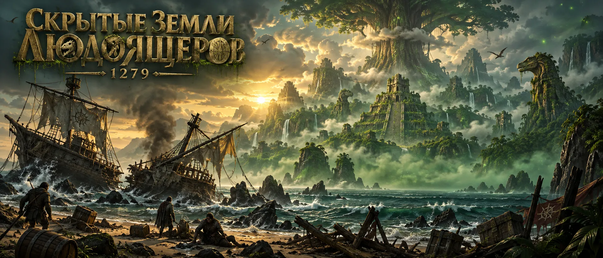
Скрытые земли людоящеров
Эластрия, Эпоха изменений. Остатки Ордена Симори отправляют корабли к острову, где обосновалась чумная богиня. Ваш корабль до острова не дошёл.
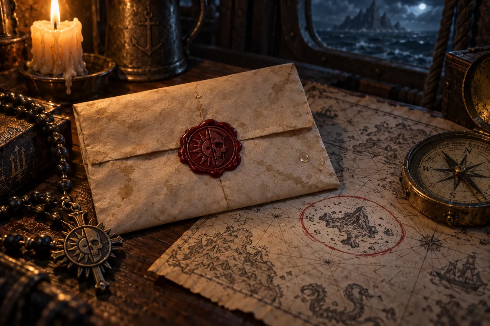
После Ереси Ордена Симори Авангардия окончательно теряет силу и величие. Соседи пристально следят: каждый готов оттяпать кусок от только что развалившейся величайшей империи.
Остатки Ордена хранят тайну о чумной богине, которая обосновалась где-то в землях людоящеров, и тихо набирают авантюристов, чтобы те отправились на этот остров и покончили с её планами.
Вы каким-то образом оказались на одном из таких кораблей. Но что-то пошло не так: еретики напали на корабль и уничтожили его, а вас во время штурма прибило к острову людоящеров.
С этого и начинается наша история.
Мир в 1279 году
Пять лет назад величайшая империя Эластрии, Авангардия, развалилась. После Ереси Ордена Симори умерла королева, Орден прибрал власть к рукам, и страна раскололась натрое. Сегодня на её месте три земли, и ни одна не признаёт другую до конца.
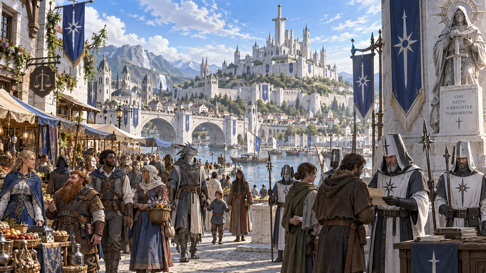
Новая Авангардия
Столица — Гарда, главная крепость — замок Блейд. Здесь живут свободнее и миролюбивее, чем при империи. Здесь же теперь обосновался Орден Симори.
Новая Авангардия поклялась больше не повторять ошибок прошлого. Начались массовые чистки еретиков и проверки всех верующих. Но проверки находят не всех: часть еретиков до сих пор прячется внутри страны и внутри Ордена.
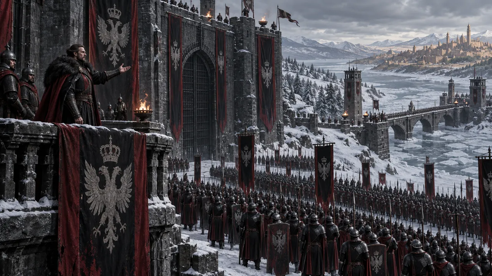
Старая Авангардия
Северная часть бывшей империи. Здесь живут консерваторы и националисты, которые считают, что Авангардия размякла: открытая внешняя политика погубила королеву и отдала страну Ордену.
Старая Авангардия зовёт себя истинными гардианцами. Многие здесь уверены, что человек — высшая форма жизни в Эластрии. С Новой Авангардией она живёт в подвешенном состоянии: ни войны, ни мира.
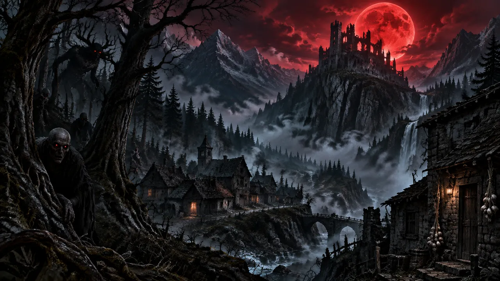
Ничейные земли
Последний регион бывшей империи не подчиняется никому. Там живут вампиры и другие порождения Кишина. Кто придёт там к власти, пока неизвестно.
Там вершится своя история, но наша кампания не о ней.
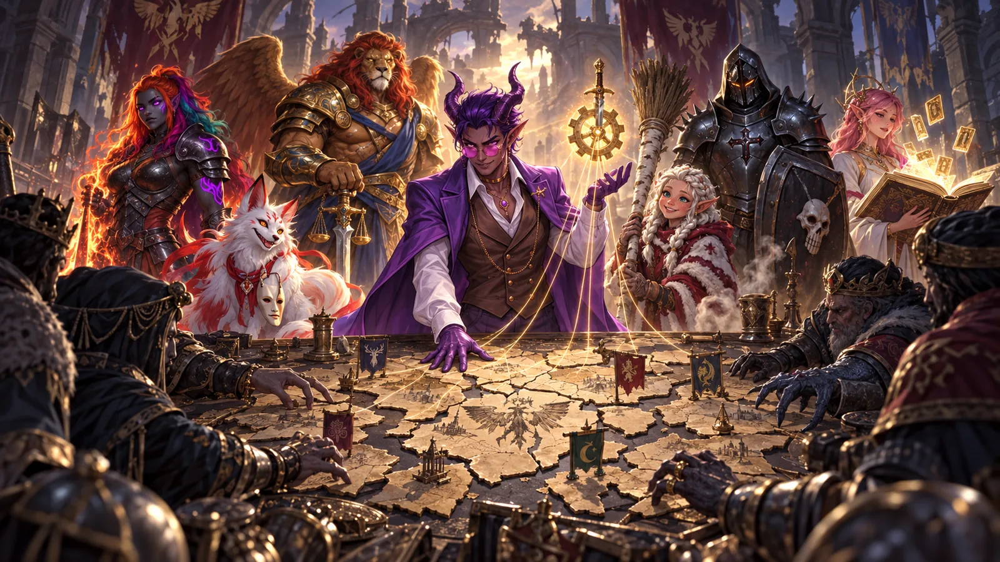
Соседи и герои
Соседние страны пристально следят за развалом и готовы оттяпать свой кусок. Их удерживают общество героев, новоиспечённые малые боги и сам Панцерфауст: они выступают за мир и за то, чтобы бывшая империя сама нашла свой путь, регион за регионом.
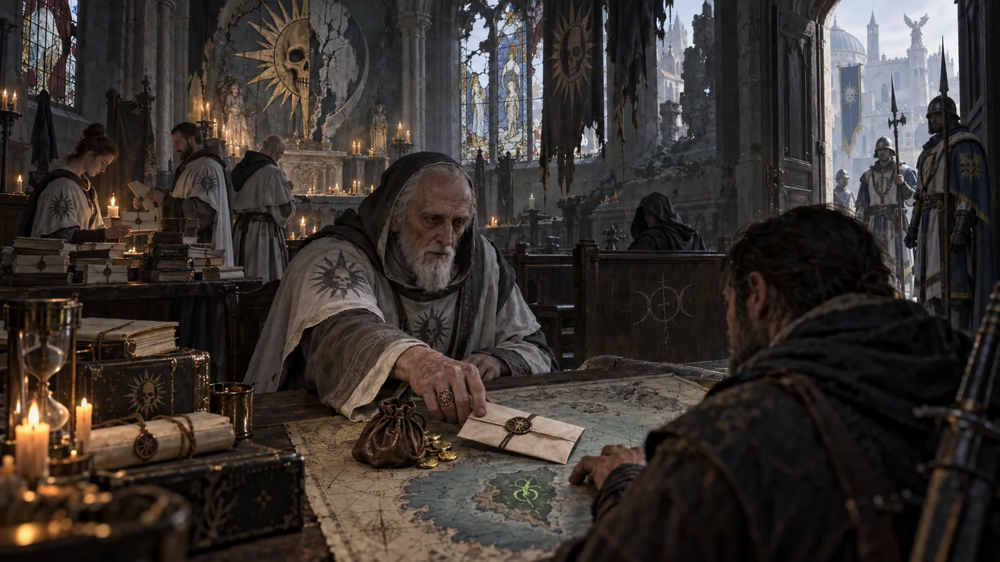
Орден Симори сегодня
От Ордена остались осколки, и он сидит в Новой Авангардии под пристальным взглядом её властей. Ересь из него до конца не ушла: еретики всё ещё мешают ему работать. Немногие в Ордене хранят тайну о чумной богине, которая обосновалась в землях людоящеров, и тихо набирают авантюристов, чтобы отправить их на остров.
Боги и остальной мир

Собрание богов
Все нынешние божества уже вошли в свой ранг: Кайрон, Фина, Роско, Лозарито и другие. В 1252 году прошло первое Собрание новых богов — фундаментальных, средних и малых.
На Собрании объявились и злые боги. Они плетут интриги, но какие — никто не знает.

Забытый бог
Благодаря Аматусу и Лиаму большинство людей забыли о Кишине, боге безумия. Помнят о нём божества, сильные сущности и совсем немногие смертные. Похоже, одним из них был кто-то из еретиков Ордена. Кто — пока неизвестно.
Кишина стережёт Карантир, Страж Безумия. Он вовремя бьёт его по голове, чтобы тот сидел смирно и больше никогда не выбрался.
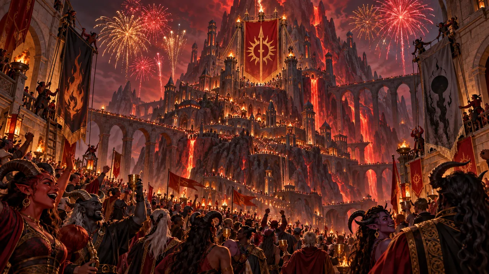
Тифлинговый пик
В 1260 году тифлинги окончательно объединились. Больше нет Тифлингов Аквиртуса и Тифлингов Экзортуса — есть единые тифлинги, которые снова зовут свою землю Тифлинговым пиком, как до Войны за Зефрит.
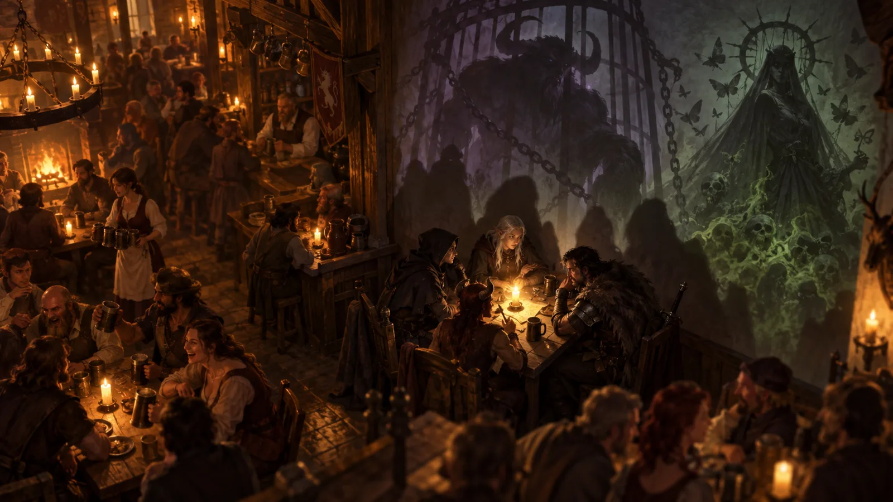
Что знают ваши герои
Всё на этой странице — знание для вас как игроков. Обычный житель Эластрии о Кишине не помнит, а о чумной богине не слышал вовсе. Если ваш герой знает больше — напишите в анкете, откуда.
Хроника последних лет
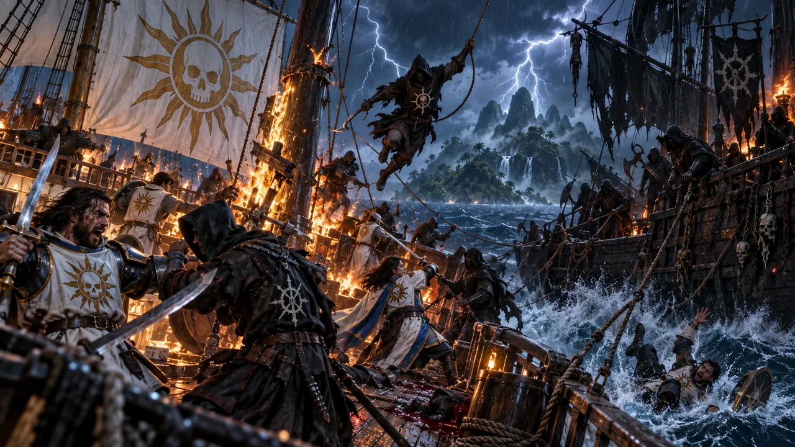
- 1247 · Ересь Ордена СимориРаскол Ордена накрывает Авангардию. Умирает королева, Орден прибирает власть к рукам.
- 1247 · Заточение КишинаБога безумия заковывают в клетку. Карантир становится его вечным хранителем — Стражем Безумия.
- 1252 · Собрание новых боговВпервые собираются все боги: фундаментальные, средние и малые. Объявляются и злые боги.
- 1260 · Тифлинговый пикТифлинги Аквиртуса и Экзортуса окончательно объединяются.
- 1274 · Распад империиАвангардия раскалывается на Новую, Старую и ничейные земли. В Новой Авангардии начинаются чистки еретиков.
- 1279 · Тайна чумной богиниНемногие уцелевшие из Ордена узнают, что в землях людоящеров обосновалась богиня болезней.
- НаборОрден тихо нанимает авантюристов и отправляет корабли к острову. Один из этих кораблей — ваш.
- ШтурмЕретики атакуют корабль и уничтожают его. В хаосе штурма вас выбрасывает на берег.
- Остров людоящеровВы приходите в себя на песке среди обломков. Отсюда начинается игра.
Что болтали на корабле
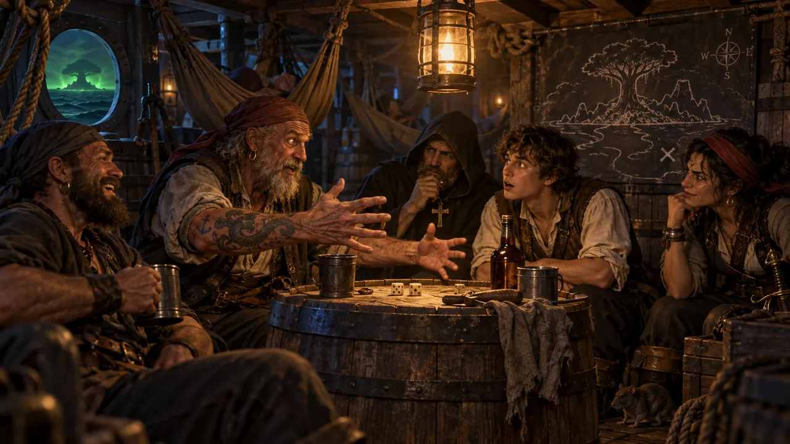
Каждый игрок бросает к8 и получает один слух. Какие из них правда — узнаете на острове.
Ваш герой
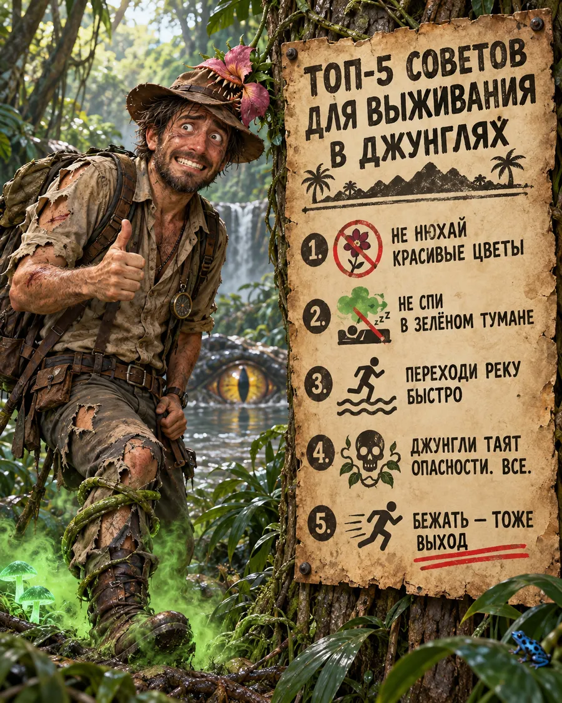
- 7 уровень, правила D&D 2024. Остальные детали создания персонажа обсудим на нулевой сессии.
- Стартовое золото: 500 зм + 1к10 × 25 зм и обычное начальное снаряжение класса и предыстории.
- Магические предметы: 1 обычный и 1 необычный на выбор (согласуйте с мастером).
- Вы уже опытные авантюристы: Орден нанимал тех, кто способен выжить там, где пропадали другие.
- Людоящеры говорят на драконьем. Если хоть один из группы его знает, жить станет проще.
- На острове пригодятся Выживание, Природа, Атлетика и Медицина. Не обязательно всё у одного героя.
- Ответьте на анкету ниже. По ответам мастер вплетёт ваше прошлое в остров: в его подземелья, в его чудовищ и в людей, которых вы там встретите.
Кто ваш герой
Эти вопросы помогают вам самим понять героя, а мастеру — связать его историю с островом. Не обязательно отвечать на всё: лучше коротко и честно, чем длинно и для галочки. Один-два ответа, которые цепляют, важнее десяти общих.
Ответы попадают в таблицу мастера. Другие игроки их не увидят.
Анкета разбита на девять глав: первые пять про героя, остальные четыре про вас как игрока. Можно идти по порядку или прыгать между главами. Точка у главы показывает, сколько вы уже ответили.